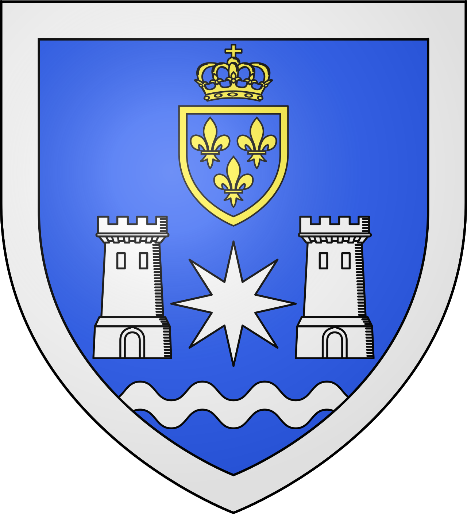
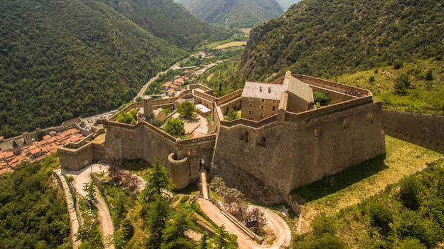

Villefranche
de-Conflent


⟹ Patrimoine Mondial UNESCO · Fortifications Vauban ⟸

1092 : la fondation d'une ville neuve. Villefranche-de-Conflent est fondée le 9 avril 1092 par Guillaume Raymond, comte de Cerdagne. Le choix du site répond à une nécessité stratégique : la cité s'installe au confluent de la Têt et du Cady, dans une vallée très encaissée qui constitue un passage obligé entre la plaine du Roussillon et les hautes terres de Cerdagne.
Une « ville franche » pour attirer les habitants. Comme de nombreuses fondations médiévales portant le nom de Villefranche, la nouvelle cité bénéficie de privilèges destinés à favoriser son peuplement et son activité économique. Sa fonction militaire s'accompagne ainsi d'un rôle commercial : artisans, marchands et habitants s'installent à l'intérieur d'une enceinte qui protège à la fois la population et la route stratégique.

Une enceinte médiévale précoce. Les premières défenses sont élevées dès la fin du XIe siècle. Le tracé général de la ville actuelle reprend largement celui de cette fondation médiévale. Les deux extrémités de la cité commandent le passage dans la vallée, tandis que les murailles s'appuient sur les escarpements naturels et sur la rivière.
Le renforcement du XIVe siècle. À l'époque de la couronne d'Aragon, les fortifications sont renforcées par une série de tours de flanquement semi-circulaires. Deux accès principaux sont protégés à l'est et à l'ouest. Cette modernisation médiévale améliore considérablement la défense de la ville, qui constitue alors l'un des verrous du Conflent.
1374 : une ville qui résiste. Les nouvelles défenses permettent à Villefranche de soutenir victorieusement le siège de 1374 conduit par l'infant Jacques, fils du dernier roi de Majorque. Cet épisode confirme l'importance de la place dans les luttes dynastiques et territoriales qui marquent la Catalogne médiévale.
Une cité prospère. Au-delà de son rôle militaire, Villefranche connaît une activité économique soutenue au Moyen Âge. Sa position sur la route de la Cerdagne favorise le commerce et les échanges. L'église Saint-Jacques, les maisons anciennes et l'organisation régulière des rues témoignent encore de cette vie urbaine au cœur d'une vallée de montagne.
1659 : une frontière bouleversée. Après les guerres franco-espagnoles du XVIIe siècle, le traité des Pyrénées rattache le Roussillon et le Conflent à la France. Villefranche, autrefois place intérieure des territoires catalans, devient soudain une ville de frontière du royaume de Louis XIV. Sa valeur stratégique augmente considérablement.
Vauban face à un site difficile. Vauban visite Villefranche en 1669 puis revient en 1679. Il juge la position à la fois essentielle et vulnérable : la ville est enfermée dans une gorge et peut être dominée par les hauteurs voisines, d'où une artillerie ennemie pourrait la bombarder. Plutôt que de remplacer entièrement les défenses médiévales, il choisit de les adapter au terrain.
La transformation de l'enceinte. Les remparts sont relevés et renforcés. Vauban prévoit bastions, demi-lunes, ouvrages avancés et portes nouvelles. L'une des particularités de Villefranche est la conservation de nombreuses tours médiévales intégrées au système moderne. L'ensemble constitue ainsi une superposition particulièrement intéressante de fortifications du Moyen Âge et du Grand Siècle.
La Cova Bastera. Sur le front aval, une grotte naturelle est transformée en ouvrage défensif casematé. Cette « Cova Bastera » protège la vallée et complète l'enceinte. Elle illustre la capacité des ingénieurs militaires à utiliser la géographie existante plutôt qu'à imposer un plan théorique au terrain.
1681 : le Fort Libéria. Le point faible principal demeure la montagne qui domine la ville. Vauban décide donc d'y établir un fort autonome. Construit à partir de 1681 à environ 160 mètres au-dessus de la cité, le Fort Libéria contrôle les hauteurs et empêche un ennemi d'y installer son artillerie. Son plan irrégulier épouse la pente et permet à une garnison de tenir le site indépendamment de la ville.
L'escalier souterrain. Le célèbre escalier reliant aujourd'hui la ville au Fort Libéria compte plusieurs centaines de marches. Il est postérieur à Vauban et complète le dispositif de liaison entre les deux ensembles. Sa présence contribue aujourd'hui à l'image spectaculaire du site, mais l'intérêt militaire originel résidait surtout dans la couverture réciproque entre la cité, la grotte casematée et le fort supérieur.
Une ville de garnison jusqu'à l'époque contemporaine. Villefranche conserve longtemps sa fonction militaire. Cependant, l'évolution des frontières et de l'artillerie réduit progressivement son importance stratégique. À la fin du XVIIIe siècle, le transfert de fonctions administratives vers Prades accentue le déclin relatif de la petite cité, qui demeure néanmoins un centre local actif.
Le patrimoine comme nouvelle richesse. À partir du XIXe et surtout du XXe siècle, la valeur historique et architecturale de Villefranche est de plus en plus reconnue. Les remparts, le Fort Libéria, l'église Saint-Jacques et les maisons de la cité deviennent les principaux témoins de son passé médiéval et militaire.
Le Train Jaune et l'ouverture vers la montagne. Villefranche-de-Conflent devient également l'une des portes d'accès à la haute vallée de la Têt et à la Cerdagne grâce à la ligne ferroviaire du Train Jaune. Cette infrastructure, devenue emblématique des Pyrénées catalanes, transforme les déplacements et renforce la vocation touristique de la cité.
Patrimoine mondial depuis 2008. Les fortifications de Villefranche-de-Conflent — enceinte urbaine, Cova Bastera et Fort Libéria — font partie des douze ensembles inscrits par l'UNESCO au titre des « Fortifications de Vauban ». Le site est particulièrement remarquable par l'adaptation des ouvrages à une vallée étroite et par la combinaison de structures médiévales et modernes.
Une histoire encore lisible dans la pierre. Villefranche offre aujourd'hui une lecture presque continue de neuf siècles d'histoire : fondation comtale, prospérité médiévale, rivalités catalanes, nouvelle frontière franco-espagnole, transformations de Vauban, vie de garnison puis valorisation patrimoniale. Peu de cités permettent de suivre aussi clairement l'évolution de l'architecture défensive européenne.
Pour approfondir : Site officiel de Villefranche-de-Conflent · Réseau des sites majeurs de Vauban — Villefranche-de-Conflent · Fort Libéria — Origine · UNESCO — Fortifications de Vauban.
Sébastien Le Prestre de Vauban, maréchal et ingénieur militaire de Louis XIV, a conçu le Fort Libéria et modernisé les fortifications de la cité après l'annexion du Roussillon.
La ville doit sa fondation aux comtes de Cerdagne, qui en firent une place forte destinée à contrôler les voies d'accès entre la plaine du Roussillon et la haute montagne.
Accès : Villefranche-de-Conflent se trouve à environ 50 minutes de Perpignan par la route ou le train, et constitue le terminus de la ligne classique vers la gare du Train Jaune.
Office de tourisme : situé aux abords des remparts, il organise des visites guidées de la cité, du Fort Libéria et de l'escalier des Mille Marches.
Bon à savoir : la montée au Fort Libéria par l'escalier souterrain demande une bonne condition physique ; une navette existe pour la redescente.